Donde el azul del Mediterráneo se encuentra con el blanco de la cal y el aroma a azahar.
DescubrirBañada por más de veinte kilómetros de costa, Estepona conserva el alma de los pueblos blancos andaluces sin renunciar al pulso vibrante de los destinos más cosmopolitas del Mediterráneo.
Sus calles empedradas se visten de geranios, sus plazas huelen a jazmín y sus murales convierten el casco antiguo en un museo a cielo abierto. Un destino donde el tiempo se mide en atardeceres.
Conocida como "el jardín de la Costa del Sol", Estepona invita a pasear sin prisa, a saborear sin reservas y a quedarse para siempre.
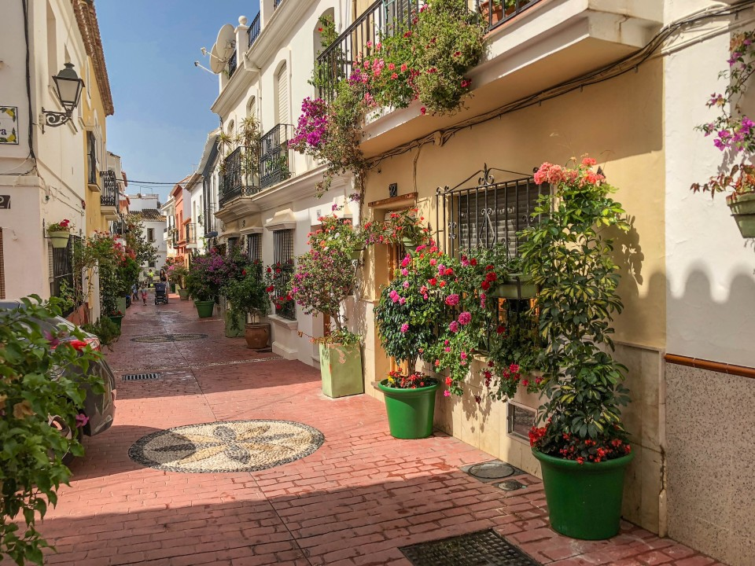
Desde plazas floridas hasta miradores frente al estrecho, seis lugares que cuentan la esencia de Estepona.
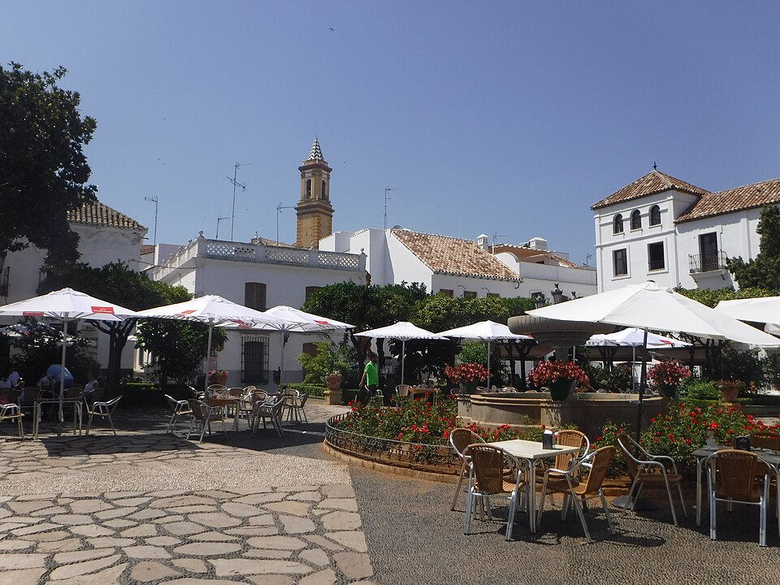
El corazón social de la ciudad: una plaza llena de naranjos, fuentes y terrazas donde se vive el ritmo más andaluz al amanecer y al anochecer.
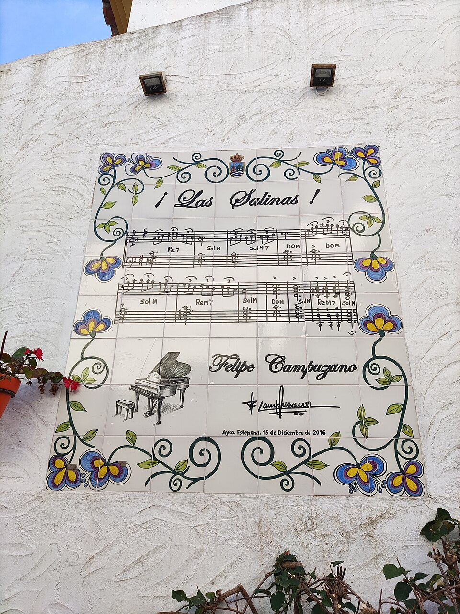
Un laberinto de calles encaladas, balcones repletos de geranios y rincones llenos de poesía. Pasear por aquí es viajar al alma de la Andalucía costera.
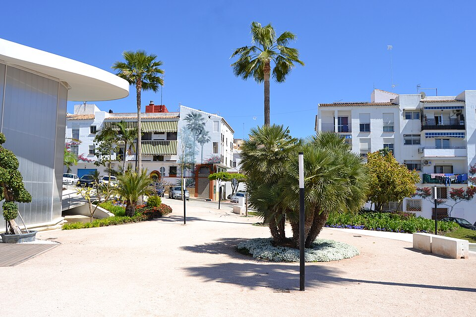
Más de setenta obras de gran formato firmadas por artistas internacionales convierten cada esquina en una galería al aire libre.
Una cúpula de cristal que alberga más de 1.300 especies de orquídeas tropicales: un rincón mágico en pleno centro de la ciudad.
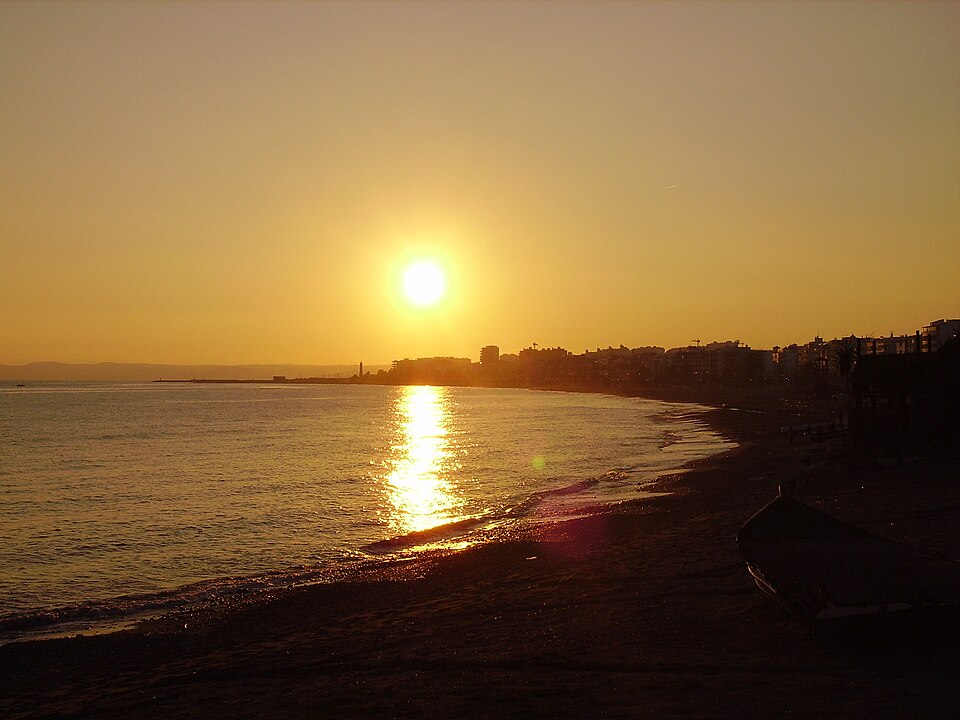
Más de tres kilómetros de paseo entre palmeras, chiringuitos y playas doradas. La cita obligada para ver el atardecer sobre el estrecho.
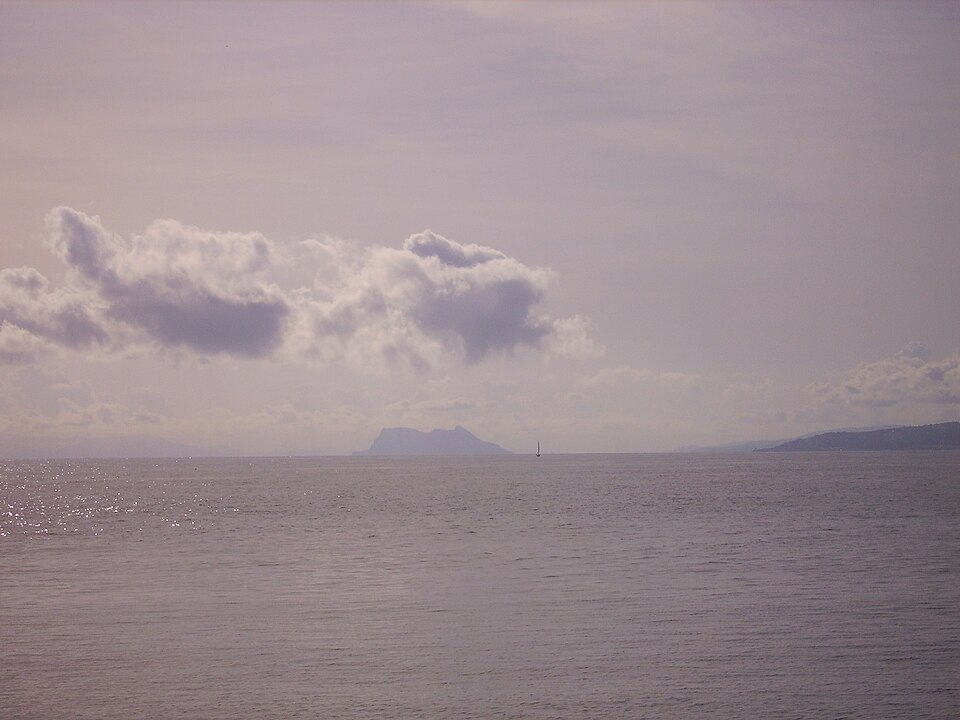
Junto al puerto pesquero, ofrece una de las panorámicas más fotografiadas de la ciudad, con la sierra Bermeja recortada al fondo.
Pescado fresco, huerta cercana y recetas heredadas. La cocina de Estepona es honesta, marinera y profundamente mediterránea.
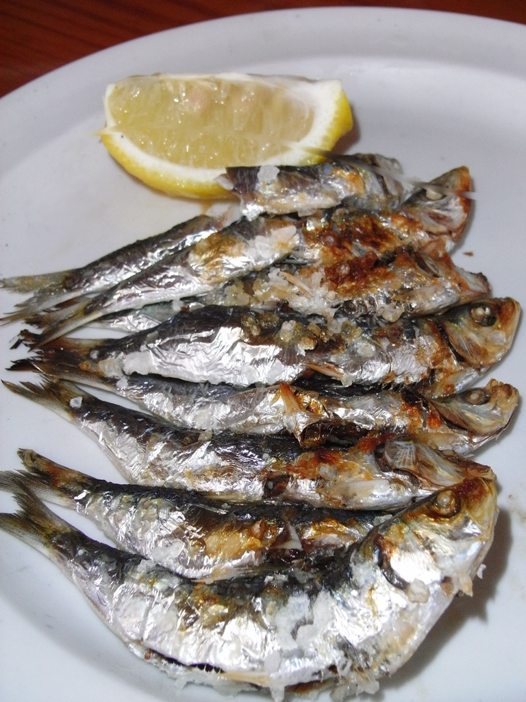
El icono malagueño por excelencia: sardinas ensartadas en una caña y asadas con leña de olivo en la misma arena de la playa.
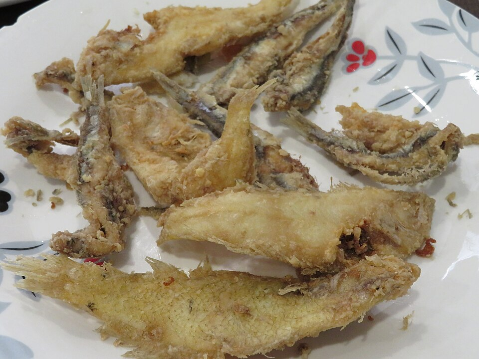
Boquerones, calamares, salmonetes y rosadas, rebozados con harina especial y fritos en aceite de oliva. Crujiente por fuera, jugoso por dentro.
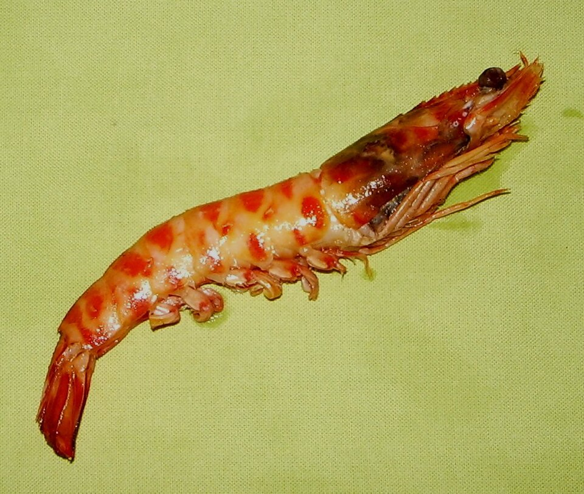
Capturado por la flota local, es de los más apreciados del Mediterráneo. A la plancha con sal gorda revela todo su sabor a mar.
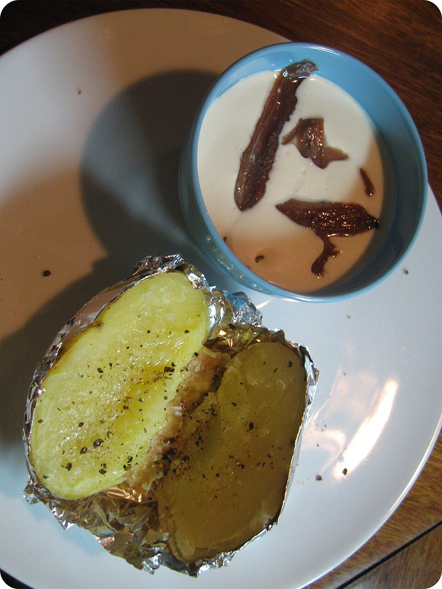
Almendras, ajo, pan, aceite y vinagre. Una receta milenaria, blanca y refrescante, servida con uvas moscatel o melón.
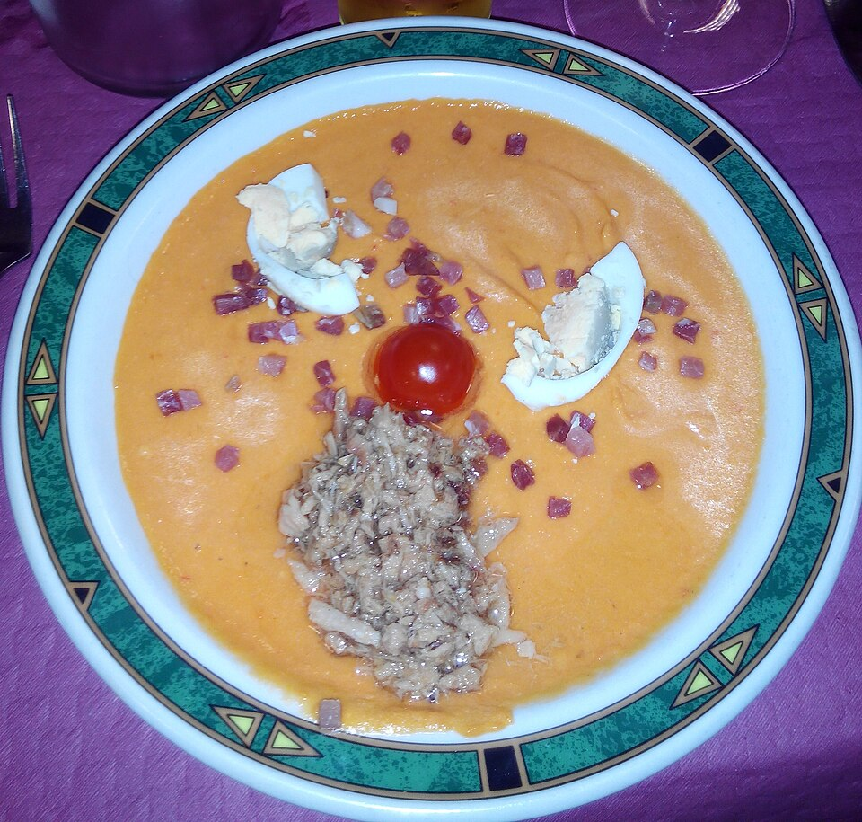
Más densa y cremosa que el gazpacho, se sirve con jamón y huevo cocido. Un imprescindible de cualquier mesa veraniega.
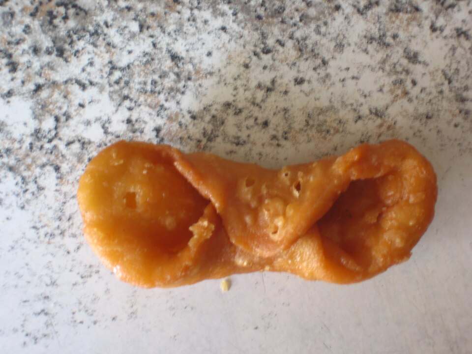
Tortas de aceite, borrachuelos, pestiños y roscos elaborados con recetas centenarias, ideales para acompañar un café del sur.
"Estepona huele a flor de azahar, a sal de mar y a leña de espeto. Tres aromas que ningún viajero olvida."— Crónicas del litoral malagueño
Todo lo que necesitas saber para descubrir Estepona con calma, desde los puntos oficiales de información hasta los recursos digitales.